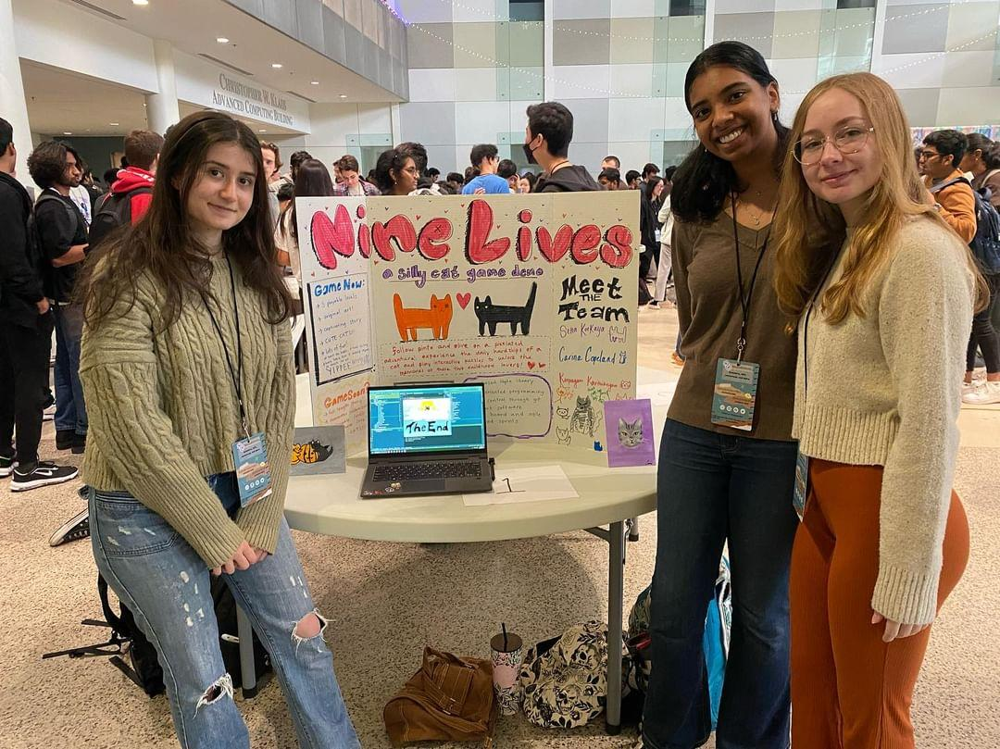

NineLives

Created at HackGT23, this project is a Java based game where players can expereince the life of cats. Featuring an engaging story along with challenging mini games. The project was created in less than 36 hours, which required me to learn new skills in a limited time period. The Java LibGDX library was used to create the game.